Dragon Ball
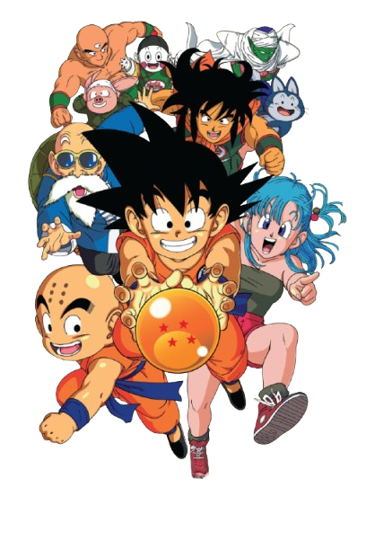Introduction
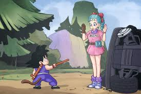Dragon Ball follows the adventures of Son Goku, a young martial artist with a monkey tail and an insatiable love for fighting. He begins his journey when he meets Bulma, a teenage genius searching for the seven Dragon Balls, mystical orbs that summon the wish-granting dragon, Shenron, when gathered. Throughout his travels, Goku befriends many allies, including Master Roshi, the wise yet perverted martial arts master; Krillin, his best friend and rival; Yamcha, a desert bandit turned hero; and Tien Shinhan, a disciplined warrior who starts as an enemy but later joins the good side. Goku also meets powerful foes, including the Red Ribbon Army, King Piccolo, and his reincarnation, Piccolo Jr. The main purpose of Dragon Ball is to showcase Goku's journey of growth, from a naïve boy in the mountains to one of the world's greatest martial artists, all while seeking strong opponents, protecting the Earth, and competing in tournaments.
Red Ribbon Army Saga
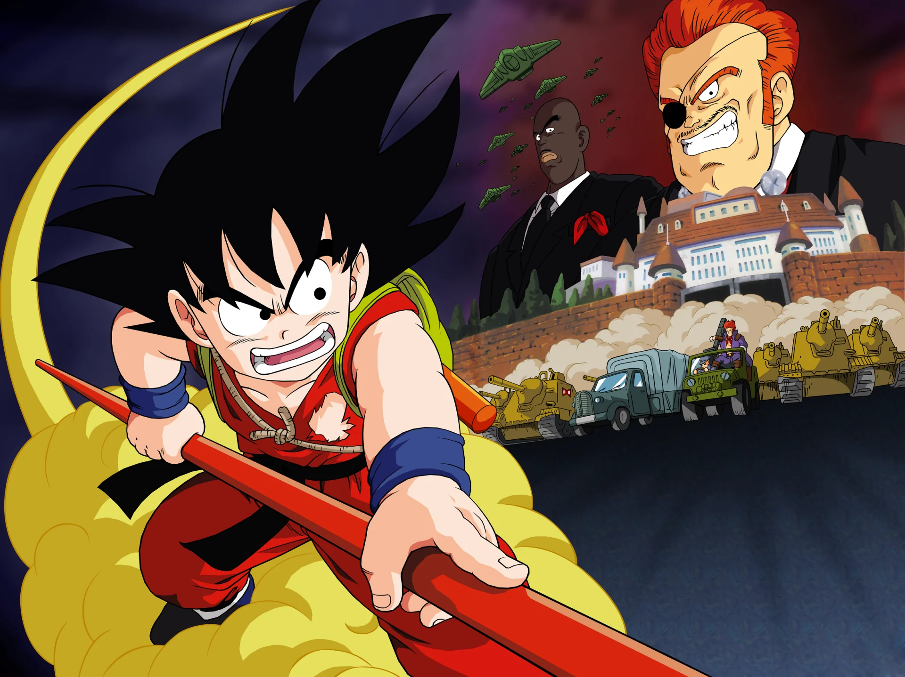Goku resumes his quest for the Dragon Balls, but his journey brings him into conflict with the Red Ribbon Army, a vast and ruthless military organization bent on world domination. He takes on various divisions of the army, including: Muscle Tower, where he battles General White and rescues Android 8 (Eighter). An underwater fight against General Blue, who uses psychic powers. After the army hires Mercenary Tao, a deadly assassin, to eliminate him, Goku is defeated but survives. Determined to win, he trains at Korin Tower, enhancing his speed and strength. Goku exacts revenge by defeating Tao and later single-handedly storms the Red Ribbon Army headquarters, taking down Commander Red and his forces, ending the army once and for all. Later, Goku helps Fortuneteller Baba, meets his grandfather Gohan's spirit, and prepares for the next World Martial Arts Tournament.
Tien Shinhan Saga
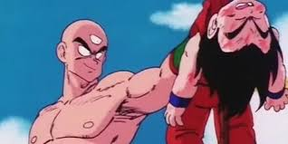Goku, Krillin, and their friends enter the 22nd World Martial Arts Tournament, where they face off against Tien Shinhan and Chiaotzu, who train under Master Shen, a rival of Master Roshi. Tien is initially a ruthless and arrogant fighter, taught to be merciless, while Chiaotzu has psychic abilities. Key battles include: Yamcha vs. Tien, where Tien shatters Yamcha's leg. Goku vs. Krillin, showcasing their friendship and growth. Tien vs. Master Roshi (Jackie Chun), leading Tien to question his brutal methods. In the final match, Goku fights Tien, an evenly matched battle that shakes the entire arena. Goku is hit by a powerful attack, but both fighters fall from the sky. Tien barely wins due to a lucky landing. After the tournament, Krillin is mysteriously killed, leaving a cryptic warning. Goku, enraged, rushes off to find his killer, leading to the King Piccolo Saga.
King Piccolo Saga
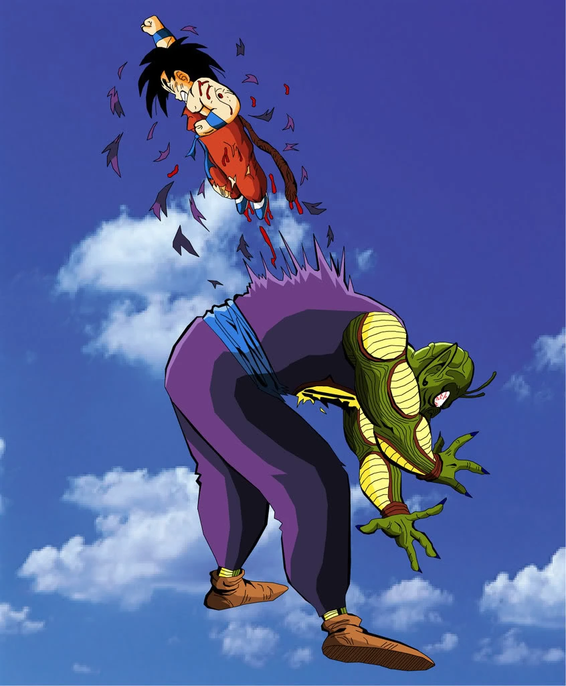Krillin's death is revealed to be the work of Tambourine, a minion of King Piccolo, a centuries-old demon who once terrorized the Earth before being sealed away. King Piccolo seeks revenge and the Dragon Balls to regain his youth, sending his minions—Tambourine, Cymbal, and Drum—to eliminate martial artists who could oppose him. Goku, exhausted from his previous battles, is easily defeated by Tambourine. However, after recovering, he destroys Tambourine in a rematch. Meanwhile, King Piccolo kills Master Roshi and Chiaotzu, successfully wishing for his youth and full power to be restored. Goku, nearly dead, is saved by Yajirobe, who takes him to Korin Tower. Goku drinks the Ultra Divine Water, a dangerous elixir that unlocks his hidden potential. He faces King Piccolo in an epic battle, where King Piccolo nearly kills him. In the final moment, Goku launches himself into the air and punches through King Piccolo's chest, killing him. Before dying, King Piccolo spits out an egg, ensuring his reincarnation—Piccolo Jr. After the battle, Kami, Earth's Guardian, revives the Dragon Balls and offers to make Goku the next Guardian, but Goku declines and instead trains with him for the next tournament.
Piccolo Jr. Saga
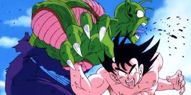Three years later, Goku, now an adult, enters the 23rd World Martial Arts Tournament, where Piccolo Jr., King Piccolo’s reincarnation, seeks revenge. Other returning fighters include Tien, Krillin, and Yamcha, with new opponents like Shen, secretly Kami in disguise, attempting to seal Piccolo away. Key battles include: Tien vs. Goku, where Goku outmatches him using speed and technique. Piccolo vs. Kami, where Piccolo nearly kills him. Goku vs. Piccolo in the finals, a battle that levels the arena. Piccolo uses devastating attacks, including his Giant Form and energy waves capable of destroying cities. Despite this, Goku narrowly wins by outmaneuvering Piccolo and landing the final blow. Instead of killing him, Goku spares Piccolo's life, believing that having a strong rival will keep him motivated to improve. After the tournament, Goku and Chi-Chi get engaged, setting the stage for Dragon Ball Z.

Introduction
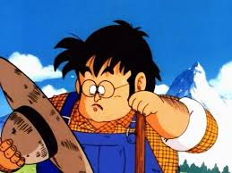Dragon Ball Z is the direct sequel to the original Dragon Ball series, continuing the adventures of Goku and his friends. It focuses on Goku's maturation, his discoveries about his true heritage, and the battles he faces to protect Earth from increasingly powerful threats. Dragon Ball Z follows the journey of Goku, his allies, and the many foes they encounter, featuring epic battles, transformations, and the introduction of new powerful enemies that test the limits of Earth's defenders. The series expands on the lore introduced in Dragon Ball, particularly the concept of warriors with superhuman strength, the Dragon Balls' mystical powers, and the various threats from both Earth and the universe.
Saiyan Saga

The story begins with the arrival of Goku's brother, Raditz, who reveals Goku's true Saiyan heritage. Raditz attempts to convince Goku to join him in conquering Earth, but Goku refuses. Goku and Piccolo Team Up: Goku and Piccolo join forces to defeat Raditz, but Raditz is too strong. Goku sacrifices himself by holding Raditz in place, allowing Piccolo to kill him with a Special Beam Cannon. Nappa and Vegeta Arrive: Two stronger Saiyans, Nappa and Prince Vegeta, arrive on Earth to avenge Raditz's death and to search for the Dragon Balls. The Z Fighters (Goku's friends) struggle against Nappa, who kills several of them. After training in the afterlife, Goku returns and faces off against the powerful Nappa. He defeats Nappa and then engages in a fierce battle with Vegeta. Vegeta transforms into a Great Ape and battles Goku, but with the help of his friends, Goku manages to weaken him. Vegeta retreats, vowing to return later.
Frieza Saga
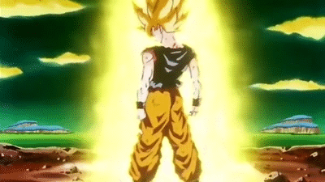The Z Fighters travel to Namek to gather the Dragon Balls and revive their fallen friends. Meanwhile, the tyrant Frieza is also searching for the Dragon Balls to wish for immortality. Frieza's elite force, the Ginyu Force, is dispatched to capture the Dragon Balls. They engage in fierce battles with Goku and his friends, with Goku facing the powerful Captain Ginyu in a body-switching fight. Goku finally confronts Frieza. After a long and intense battle, Frieza kills Goku's best friend, Krillin, pushing Goku to his breaking point. Goku transforms into a Super Saiyan for the first time, overwhelming Frieza with his newfound power. In the final confrontation, Goku defeats Frieza but shows mercy, only for Frieza to attempt a final attack. In response, Goku fires a blast that defeats Frieza. The planet begins to explode, and Goku narrowly escapes.
Cell Saga
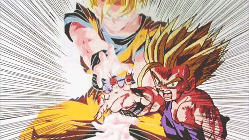A new threat arises with the appearance of the Androids, created by Dr. Gero, a scientist from the Red Ribbon Army. These Androids are stronger than anything the Z Fighters have faced before. A bio-engineered being named Cell is introduced. He absorbs other beings to evolve and achieve his “perfect” form. Cell's primary goal is to destroy Earth and challenge the Z Fighters in a tournament. Cell creates the Cell Games, a deadly tournament where he challenges Earth's strongest warriors. The Z Fighters engage in a series of battles with Cell, with Goku and his son Gohan being the key fighters. In the final battle, Goku sacrifices himself to save Earth and urges Gohan to unleash his hidden power. Gohan transforms into a Super Saiyan 2 and defeats Cell, saving the planet.
Majin Buu Saga
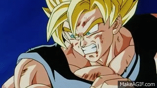A powerful ancient creature, Majin Buu, is accidentally released from his seal by the wizard Babidi. Buu is an immensely powerful being capable of destroying entire planets. The Z Fighters struggle against Buu's various forms. After many battles, Buu absorbs multiple characters, becoming even stronger. Vegeta, consumed by his rivalry with Goku, allows himself to be possessed by Babidi in an effort to become stronger. He battles Goku, but they are interrupted by Buu's rampage. Goku and Vegeta, after realizing the seriousness of the threat, fuse using the Potara earrings to create Vegito. With the help of Goku, Vegeta, and their allies, they manage to defeat Buu's various forms. The final battle sees Goku and Vegeta using the Spirit Bomb to defeat the final, most powerful form of Majin Buu. Goku uses the Spirit Bomb to destroy Buu once and for all. The Earth is restored, and the saga ends with peace returning to the universe.
Introduction
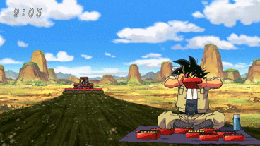Dragon Ball Super is the official sequel to Dragon Ball Z, continuing the adventures of Goku and his friends after the defeat of Majin Buu. The series explores the existence of powerful gods, alternate universes, and the return of old enemies while pushing the limits of power beyond what was previously imagined. Goku and Vegeta train to reach new heights, Earth faces threats from across the cosmos, and the very fabric of reality is tested in high-stakes battles.
Beerus Saga

The story begins with the introduction of Beerus, the God of Destruction, who awakens from a long slumber after having a vision of a powerful warrior known as the Super Saiyan God. Beerus and his angel attendant, Whis, travel to Earth in search of this warrior, leading to a confrontation with Goku. After an intense battle, Goku attains the Super Saiyan God form through a ritual using the energy of five other Saiyans. However, even with this newfound power, he is unable to defeat Beerus. Impressed by Goku's strength and entertained by Earth's food, Beerus spares the planet and leaves, setting the stage for future developments.
Golden Frieza Saga

Following Beerus' visit, Frieza's army collects the Dragon Balls and resurrects their fallen emperor. Fueled by his hatred for Goku and Vegeta, Frieza trains for the first time in his life and achieves a powerful new transformation: Golden Frieza. He leads an invasion on Earth, where Goku and Vegeta (who have been training with Whis) return just in time. Both have unlocked a new form known as Super Saiyan Blue, combining Super Saiyan power with divine energy. After a fierce battle, Frieza momentarily gains the upper hand, but his overconfidence leads to his downfall. With the help of Whis reversing time, Goku eliminates Frieza before he can destroy Earth.
Universe 6 Saga

Beerus' brother, Champa, the God of Destruction from Universe 6, challenges Beerus to a tournament. The winner gets to claim Earth's planet-sized delicacies (since Universe 6's Earth was destroyed). Each god selects five warriors to fight for their universe. Goku, Vegeta, Piccolo, Monaka (Beerus' supposed secret weapon), and Majin Buu (who fails to qualify) face powerful foes, including Hit, a deadly assassin, and Cabba, a Saiyan from Universe 6. Goku is impressed by Hit's Time-Skip ability but ultimately forfeits the match. The tournament ends with Universe 7's victory thanks to Monaka, who accidentally knocks Hit out. However, Goku and Hit gain mutual respect, and the tournament hints at stronger enemies ahead.
Future Saga

Future Trunks returns to the present, warning of a new, unstoppable enemy—a sinister version of Goku known as Goku Black. Black is later revealed to be Zamasu, a rogue Supreme Kai from Universe 10 who used the Super Dragon Balls to steal Goku's body and eradicate mortals. Trunks, Goku, and Vegeta travel to the ruined future to stop Black and his ally, Future Zamasu (an immortal version of himself from another timeline). After multiple battles and transformations, including Super Saiyan Rosé (Black's divine Super Saiyan form) and Vegetto Blue (Goku and Vegeta's fusion), the heroes struggle to defeat their enemy. Ultimately, Zamasu merges with the universe itself, becoming an omnipresent threat. In desperation, Goku summons the ruler of all realities, Zeno, who erases the entire timeline, ending Zamasu once and for all. Trunks and Mai relocate to a new alternate future to live in peace.
Tournament of Power Saga

The Tournament of Power is announced by Zeno, where teams from eight universes fight in a battle royale. The losing universes face total erasure. Goku assembles Universe 7's team: Goku, Vegeta, Gohan, Android 17, Android 18, Frieza, Piccolo, Krillin, Tien, and Master Roshi. The tournament is full of high-stakes battles, introducing new warriors like Jiren, the strongest fighter from Universe 11. Goku attains Ultra Instinct, a divine technique that allows him to react without thinking, but even this isn't enough to defeat Jiren alone. In the final moments, Goku, Frieza, and Android 17 work together to eliminate Jiren. Android 17 is the last one standing, winning the tournament and using his wish to restore all erased universes. With the tournament over, the multiverse remains intact, and Goku and Vegeta resume training, seeking even greater challenges.
Introduction
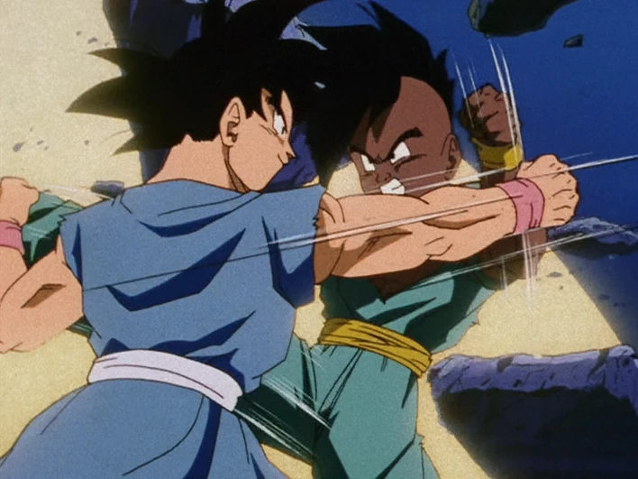Dragon Ball GT is the sequel to Dragon Ball Z, but unlike Dragon Ball Super, it is not based on Akira Toriyama's manga—it was an original anime produced by Toei Animation. GT takes a different approach from its predecessors, focusing on space adventures, transformations, and the consequences of overusing the Dragon Balls. The series begins with Goku being turned back into a child due to a wish gone wrong, forcing him to embark on a galactic journey to prevent Earth's destruction. Along the way, the stakes escalate, leading to the rise of new villains, powerful transformations, and a final battle that tests Goku like never before.
Black Star Dragon Ball Saga
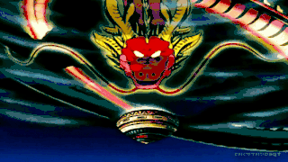The story begins when Emperor Pilaf unintentionally wishes for Goku to become a child using the mysterious Black Star Dragon Balls, which are far more dangerous than the regular ones. These Dragon Balls scatter across the universe, and if they are not retrieved within a year, Earth will explode. Goku, Pan (his granddaughter), and Trunks embark on a journey across space to recover them. Along the way, they encounter strange alien civilizations, powerful adversaries, and even mutant machines. After various adventures, they manage to collect the Dragon Balls and return to Earth—only to find a much greater threat waiting for them.
Baby Saga
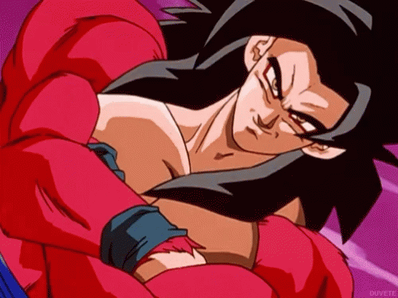Shortly after their return, Earth is invaded by Baby, a Tuffle parasite seeking revenge against the Saiyans for the destruction of his race. He infects and takes control of Earth's inhabitants, including Vegeta, transforming him into Baby Vegeta, his most powerful host. With most of the Z Fighters under Baby's control, Goku is forced to retreat to Planet Plant, where he undergoes a transformation into Super Saiyan 4 after absorbing the energy of the Earth's moon. This new form allows Goku to surpass Baby's power, leading to an intense battle. Eventually, Goku defeats Baby by blasting him into the sun. However, the use of the Black Star Dragon Balls means that Earth is still doomed. In a last-minute evacuation, the Z Fighters move Earth's people to another planet, just before Earth is destroyed.
Super 17 Saga
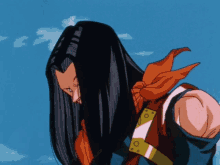Dr. Gero and Dr. Myuu (a villain from the Baby Saga) create a new Android 17 in Hell. This new Super 17 fuses with the original Android 17 to become a nearly unstoppable warrior. Meanwhile, the rift between Hell and Earth opens, allowing many of Goku's past enemies (Cell, Frieza, and others) to return. Goku is trapped in Hell, where he battles Cell and Frieza in an entertaining but ultimately one-sided fight, as he easily overpowers them. Meanwhile, Super 17 wreaks havoc on Earth, defeating the Z Fighters with ease. Once Goku escapes Hell, he faces Super 17 in a fierce battle. At first, his attacks are useless since Super 17 absorbs energy-based attacks, but Goku outsmarts him by using physical attacks instead. Goku ultimately destroys Super 17 with a Dragon Fist attack, bringing an end to the chaos.
Shadow Dragons Saga
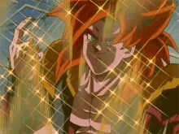A powerful ancient creature, Majin Buu, is accidentally released from his seal by the wizard Babidi. Buu is an immensely powerful being capable of destroying entire planets. The Z Fighters struggle against Buu's various forms. After many battles, Buu absorbs multiple characters, becoming even stronger. Vegeta, consumed by his rivalry with Goku, allows himself to be possessed by Babidi in an effort to become stronger. He battles Goku, but they are interrupted by Buu's rampage. Goku and Vegeta, after realizing the seriousness of the threat, fuse using the Potara earrings to create Vegito. With the help of Goku, Vegeta, and their allies, they manage to defeat Buu's various forms. The final battle sees Goku and Vegeta using the Spirit Bomb to defeat the final, most powerful form of Majin Buu. Goku uses the Spirit Bomb to destroy Buu once and for all. The Earth is restored, and the saga ends with peace returning to the universe.
Introduction
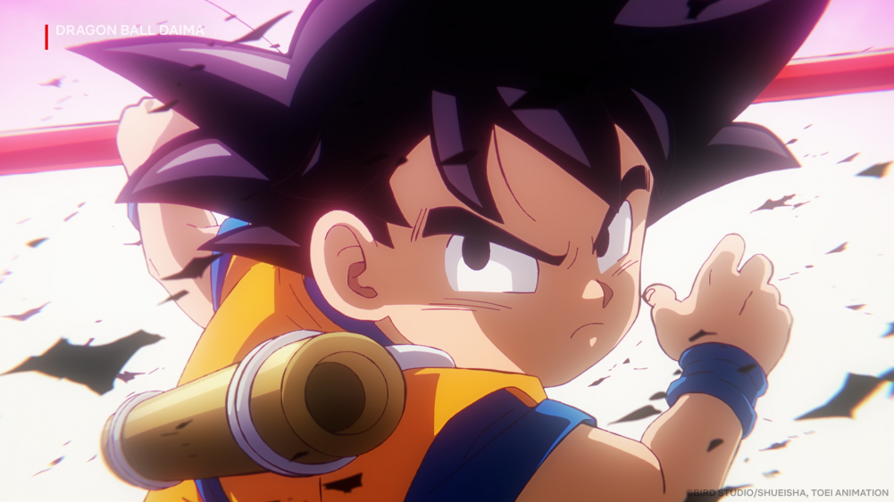Dragon Ball Daima is a new anime series created to celebrate the 40th anniversary of the Dragon Ball franchise. Unlike Dragon Ball Super, which continued the story after Dragon Ball Z, Daima takes a different approach, presenting an original storyline that exists outside of the established canon. The series is heavily influenced by Akira Toriyama's early Dragon Ball adventures, bringing back a sense of grand exploration, mystery, and fantasy. One of the biggest twists in Daima is that Goku and his allies are mysteriously transformed into children, much like what happened in Dragon Ball GT, but this time under different circumstances. The story takes them to an entirely new realm, full of ancient secrets and powerful enemies, as they struggle to regain their original forms and uncover the truth behind the strange events unfolding around them.
Summary

The story takes place sometime after the defeat of Majin Buu, during a time of peace. However, this peace is shattered when a new villain, Gomah, the Supreme Demon King, emerges from the Demon Realm seeking revenge against Goku and his allies. Accompanied by his subordinates, Gomah infiltrates the Lookout, capturing Dende and using the Dragon Balls to place a powerful curse on Goku, Vegeta, Bulma, and the others—transforming them all into children. With their bodies weakened and their abilities hindered, Goku and his friends embark on a journey to the Demon Realm in search of a way to break the curse. Along the way, they encounter formidable new foes, including the ancient Makaïoshins, a sinister race of demonic beings who have long sought to dominate both the Demon Realm and the universe. As they fight their way through this unfamiliar world, secrets about the origins of the Namekians are uncovered, revealing an unexpected connection between them and the Demon Realm itself. As the series progresses, Goku and his allies must navigate dangerous battles, solve ancient mysteries, and gather a new set of Dragon Balls capable of restoring their true forms. Along the way, they rediscover the essence of adventure that defined their earliest journeys, making Dragon Ball Daima a nostalgic return to the franchise's roots while introducing new and exciting elements to its legendary universe.
To Go Back to Shenron's Library, Click here